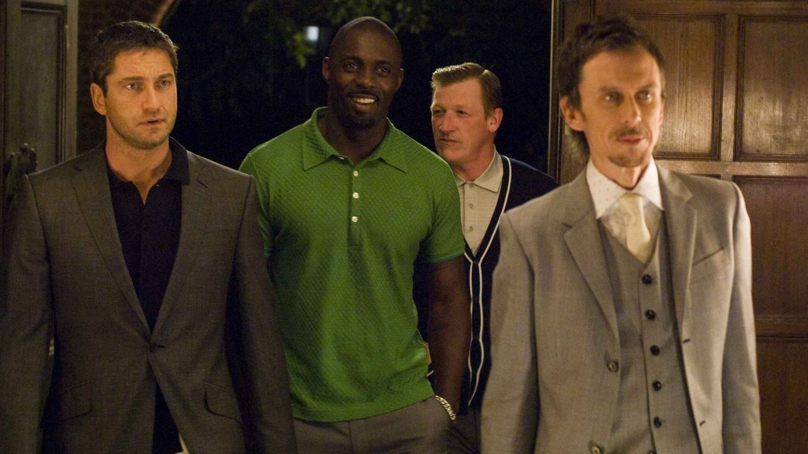

Карты деньги два, ствола
Краткое содержание фильма
Четверо приятелей накопили по 25 тысяч фунтов, чтобы один из них мог сыграть в карты с опытным шулером и матерым преступником, известным по кличке Гарри Топор. Парень проиграл 500 тысяч, на выплату долга ему дали неделю, а в противном случае и ему и его друзьям каждый день будут отрубать по пальцу. Ребята решают ограбить бандитов, решивших ограбить трех ботаников, выращивающих марихуану для местного наркобарона.
Кадры из фильма
| Год |
1998 |
| Страна |
Великобритания, CША |
| Жанр |
боевик, комедия, криминал |
| Режиссер |
Гай Ричи |
Большой куш
Краткое содержание фильма
Фрэнки Четыре Пальца должен был переправить краденый алмаз из Англии в США своему боссу Эви, но, сделав ставку на подпольный боксерский поединок, он попал в круговорот весьма нежелательных событий. Вокруг него и его груза разворачивается сложная интрига с участием множества колоритных персонажей лондонского дна — русского гангстера, троих незадачливых грабителей, хитрого боксера и угрюмого громилы грозного мафиози. Каждый норовит в одиночку сорвать большой куш.
Кадры из фильма
| Год |
2000 |
| Страна |
Великобритания, США |
| Жанр |
криминал, комедия, боевик |
| Режиссер |
Гай Ричи |
Рок-н-рольщик
Краткое содержание фильма
Опасный мир коррупции и жизни криминальных отбросов Лондона, где недвижимость потеснила такого лидера торгового рынка как наркотики, а самыми активными предпринимателями стали преступные группировки. Но каждому, кто хочет проворачивать там свои дела, будь то мелкая сошка Раз-Два или русский теневой миллиардер Юрий Омович, придется сначала договориться с одним человеком – Ленни Коулом.
Кадры из фильма

| Год |
2008 |
| Страна |
Великобритания, США |
| Жанр |
криминал, боевик, триллер |
| Режиссер |
Гай Ричи |